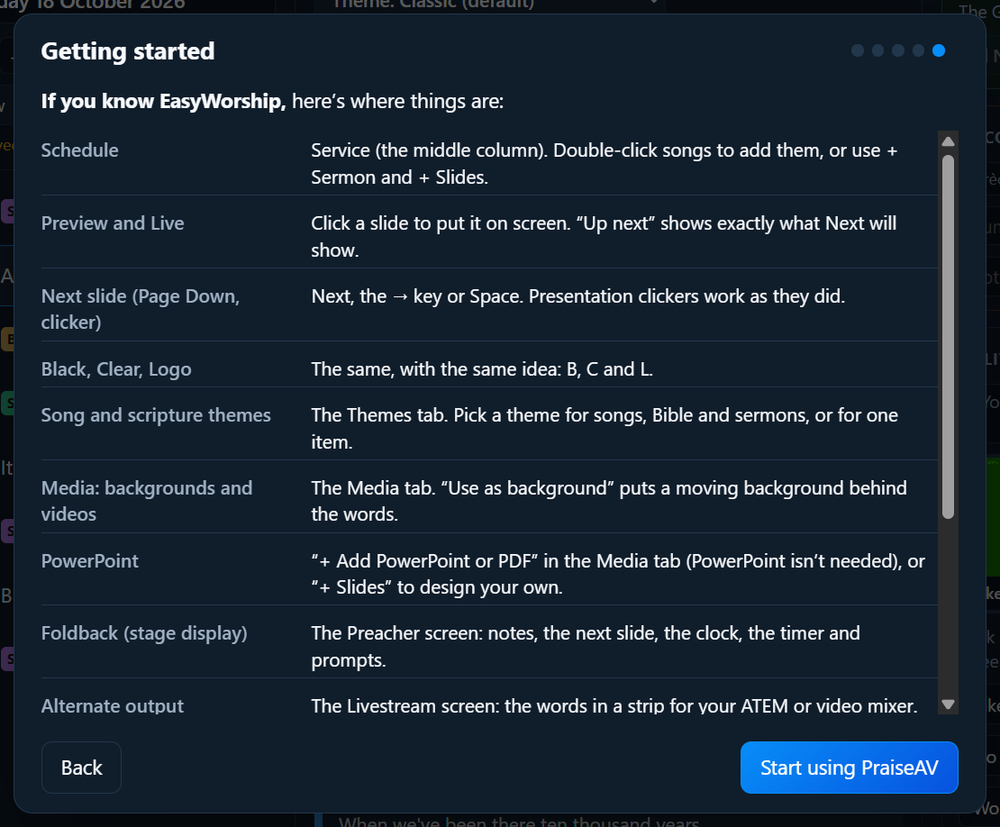

Para empezar
Si vienes de EasyWorship
PraiseAV funciona como esperan quienes usan EasyWorship, así que casi todo te resultará conocido. Esta página explica cómo traer tus cosas y dónde encontrarlo todo.
Trae tus canciones y fondos
Hazlo en el ordenador que tiene EasyWorship.
- En PraiseAV, haz clic en Primeros pasos… (abajo a la derecha) y luego en Sí: traer mis canciones y fondos.
- PraiseAV encuentra EasyWorship y muestra cuántas canciones y fondos ha encontrado.
- Haz clic en Traer las canciones, y luego en Traerlos para los fondos, imágenes y vídeos.

- Las canciones que ya tienes se saltan, así que puedes repetirlo sin problema.
- Los fondos van a la pestaña Medios, en Fondos › From EasyWorship.
- EasyWorship no se cambia ni se borra. Puedes seguir usándolo mientras pruebas PraiseAV.
- Los vídeos en formatos antiguos (WMV, AVI, MPEG) no se pueden reproducir. La aplicación gratuita HandBrake los convierte a MP4, que sí funciona.
También puedes traer canciones desde la pestaña Canciones cuando quieras: haz clic en + Añadir canciones y luego en Desde EasyWorship.
EasyWorship en otro ordenador
Copia la biblioteca de canciones de EasyWorship (los archivos Songs.db y SongWords.db, normalmente en Documentos públicos › Softouch › EasyWorship › Default › Databases › Data) a un USB. Luego, en PraiseAV, usa + Añadir canciones › Desde EasyWorship y elige Songs.db en el USB.
Cultos de EasyWorship
Los cultos guardados (archivos .ewsx) se pueden importar con + Añadir canciones › Importar archivos… en la pestaña Canciones. Sus canciones y lecturas bíblicas se añaden al final del culto. Los vídeos y presentaciones de un culto no se traen: vuelve a añadirlos desde la pestaña Medios.
Si vienes de OpenLP o ProPresenter
OpenLP
En el ordenador que tiene OpenLP, haz clic en Desde OpenLP en la pestaña Canciones. (El botón solo aparece cuando PraiseAV encuentra las canciones de OpenLP). Cada canción llega con sus estrofas, el orden, los autores, el copyright, el número CCLI y los acordes.
- Si una canción tiene un título alternativo o un número de cancionero en OpenLP, aparece después del título entre paréntesis: Abide with Me (Eventide; Our Church Hymns 27). Busca por cualquiera de los dos para encontrarla.
- Las canciones que ya tienes se saltan, así que puedes repetirlo sin problema. OpenLP no se cambia.
- OpenLP en otro ordenador: en OpenLP, elige Herramientas › Abrir carpeta de datos y copia el archivo songs.sqlite de la carpeta songs a un USB. Luego, en PraiseAV, haz clic en + Añadir canciones › Importar archivos… y elige ese archivo.
Los cultos guardados de OpenLP (archivos .osz) también se pueden importar con Importar archivos…. Sus canciones y lecturas bíblicas se añaden al final del culto. Las diapositivas personalizadas, imágenes, vídeos y presentaciones no se traen: vuelve a añadirlos desde la pestaña Medios o con + Diapositivas. Un culto guardado por un OpenLP muy antiguo (anterior a la 2.4) hay que abrirlo y guardarlo antes en un OpenLP más nuevo.
ProPresenter
Haz clic en + Añadir canciones › Importar archivos… en la pestaña Canciones y elige tus canciones de ProPresenter: archivos .pro o .proBundle de ProPresenter 7, o .pro6 de ProPresenter 6. O arrastra toda la carpeta de la biblioteca a la lista de canciones (ProPresenter 7 la guarda en Documentos › ProPresenter › Libraries).
- Cada grupo de diapositivas (Verse 1, Chorus…) pasa a ser una parte de la canción, cada diapositiva sigue siendo una diapositiva y el arreglo pasa a ser el orden de la canción.
- También llegan el título, los autores, el copyright y el número CCLI.
- Solo llega la letra. Las fuentes, los colores y los fondos se quedan en ProPresenter: elige un tema en PraiseAV.
Dónde está cada cosa
| En EasyWorship | En PraiseAV |
|---|---|
| Schedule | La columna Culto. Haz doble clic en las canciones para añadirlas, o usa + Sermón y + Diapositivas. |
| Preview y Live | Haz clic en una diapositiva para ponerla en pantalla. A continuación (a la derecha) muestra exactamente lo que mostrará Siguiente. |
| Ir a la diapositiva siguiente (Av Pág, presentador) | Siguiente, la tecla →, Espacio o Av Pág. Los presentadores inalámbricos funcionan como antes. |
| Black, Clear, Logo | Negro, Quitar texto y Logo, con las teclas B, C y L. |
| Themes | La pestaña Temas. Elige un tema para las canciones, la Biblia y los sermones, o para un solo elemento. Mira Temas. |
| Media (fondos, vídeos, imágenes) | La pestaña Medios. Usar como fondo pone un fondo en movimiento detrás de la letra. |
| Un fondo o un cuadro de texto en una diapositiva de una canción | En la ventana de la canción, haz clic en la diapositiva de la vista previa: dale a ella (o a toda su parte) su propia imagen, y texto extra arriba o abajo. Mira Otra imagen para una estrofa o el coro. |
| Audio | La música también va en la pestaña Medios, y suena desde Música y audio a la derecha. Mira Música y audio. |
| PowerPoint | + Añadir PowerPoint o PDF en la pestaña Medios. Con PowerPoint instalado, las animaciones y los vídeos funcionan, como en EasyWorship; sin él, cada diapositiva es una imagen. Mira PowerPoint y PDF. |
| Presentations | + Diapositivas abre el diseñador de diapositivas. |
| Foldback (pantalla de escenario) | La pantalla del Predicador: notas, la diapositiva siguiente, el reloj, el temporizador y los mensajes. Mira Sermones. |
| Alternate output | La pantalla de Transmisión: la letra en una franja para tu ATEM o mezclador de vídeo. Mira Transmisión. |
| Nursery alerts | Avisos para la congregación, con tus propios nombres para los grupos. Mira Avisos para la congregación. |
| Countdowns | Mensajes para la banda y el predicador, a la derecha. Mira Temporizadores. |
| Announcement loops | Pon cualquier diapositiva en Repetir solo. Mira Bucles de anuncios. |
| Guardar y pasar cultos | Guardar y Abrir (en Culto ▾), en este ordenador, OneDrive, Google Drive o un USB. Mira Cultos. |
| Bible (NIV) | Más traducciones desde bible.com en la pestaña Biblia. Mira La Biblia. |
| SongSelect | Desde SongSelect en la pestaña Canciones abre SongSelect en su propia ventana. Inicia sesión con la cuenta de tu iglesia, busca una canción y pulsa Descargar: se añade sola a tus canciones. Mira Canciones de SongSelect. |
| Reports (uso de canciones) | Uso de canciones para CCLI…, en ⋯ en la pestaña Canciones. Mira Informe de CCLI. |
Qué es diferente
- PraiseAV es gratuito. Sin suscripción, y en todos los ordenadores que quieras.
- Las pantallas extra vienen incluidas. Una pantalla del predicador, un temporizador y una señal para la transmisión van cada uno en su propia pantalla, sin suscripción ni divisor.
- No hace falta PowerPoint para mostrar diapositivas fijas. Los PDF se abren directamente; LibreOffice gratuito puede convertir un archivo PowerPoint en imágenes. Microsoft PowerPoint se necesita para las animaciones y los vídeos incrustados en directo.
- Prepara en casa, lleva a la iglesia: guarda los cultos en una carpeta de OneDrive o Google Drive sincronizada en el ordenador, y abre esa misma carpeta sincronizada en el ordenador de la iglesia.
- La transmisión viene incluida: directamente a YouTube o Facebook con la clave de transmisión, así que puedes empezar sin OBS ni ATEM, y añadirlos a medida que crezca tu iglesia. Mira Transmitir.
- Un mando en el teléfono funciona en el navegador de cualquier teléfono, sin instalar nada. Mira Mando en el teléfono.